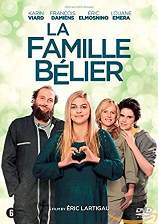

CODA es el acrónimo en inglés de "Child of Deaf Adults", es decir, hija de adultos sordos), Ruby es la única que puede oír en su familia.
Cuando el negocio de pesca de la familia se ve amenazado, Ruby se encuentra dividida entre su amor por la música y su miedo a abandonar a sus padres.CODA está basada en la premiada película francesa La Familia Belier.
